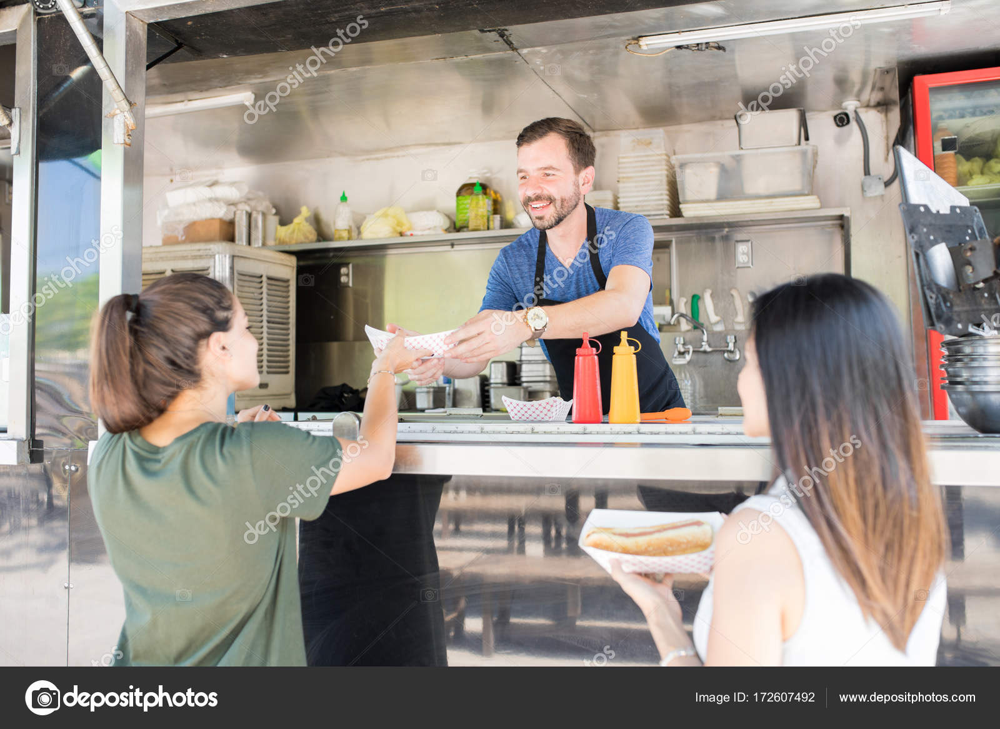

We strive to deliver the best and freshest food to our loyal customers! Here's what they have to say about us:
"I got so excited about the yumminess of the falafel salad that I am typing this review as I inhale my lunch. Yes it is that good.... Service was super friendly and quick. Can't wait see you Rogue Pickings again tomorrow!"
"The food is delicious and the staff friendly. Be prepared to queue."
"Absolutely loved Rogue Pickings. Staff was friendly, portions were huge, very creative and tasty combos. Prices were cheaper when comparing to this style of organic restaurants. Definitely keeping an eye for their next visit to town!"
"Amazing! Great selection of healthy, fresh ingredients put together in a wonderful way and in big portions!"